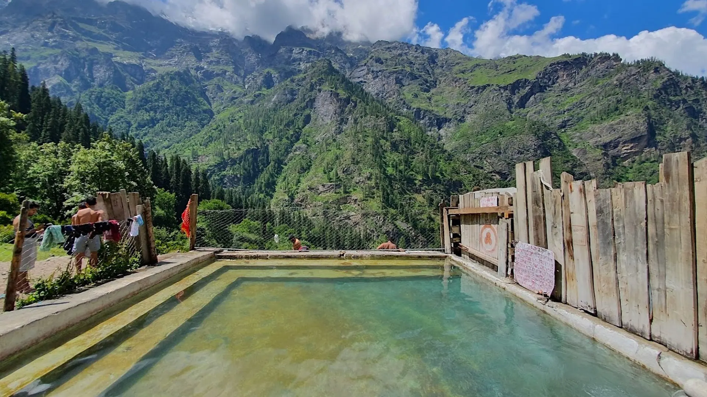

01Day 1 · Barshaini · 2,210 mkm 0.1
Start at dawn
16kmFrom Kasol · By shared taxi
Taxis from Kasol stop at Barshaini. Register at the checkpost, then cross the bridge and turn left for Nakthan.

Photo: Photos Worldwide, CC0खीरगंगा · Kullu, Himachal
The trek in one line, and what you can do with it.
Kheerganga is a short, popular trek from Kasol. Since July 2024 it is a day trek: camping at the top is banned.
5 stops on the map, then the climb. Scroll the stops and the map follows.
01Day 1 · Barshaini · 2,210 mkm 0.1
16kmFrom Kasol · By shared taxi
Taxis from Kasol stop at Barshaini. Register at the checkpost, then cross the bridge and turn left for Nakthan.
01Day 1 · Nakthan · about 2,390 mkm 3.6
3.6kmFrom Barshaini · On the mapped trail
Past apple orchards the trail reaches Nakthan, a traditional village with cafés serving Maggi and juice.
01Day 1 · Rudra Nag · about 2,390 mkm 5.2
5.2kmFrom Barshaini · On the mapped trail
At Rudra Nag a small Shiva temple stands by a waterfall said to look like a snake.
01Day 1 · Kheerganga · 2,960 mkm 9.0
40–45°CHot spring · Parvati Kund
At the top, the milky hot water of Parvati Kund fills a pool beside an old Shiva temple, with separate sections for men and women.
01Day 1 · Barshaini · 2,210 mkm 17.9
4–5hWay down · Same path
Back past Rudra Nag and Nakthan to Barshaini. Do not take shortcuts: people have fallen to their deaths on them.
Best in Apr–Jun, Sep–Oct.
Dark: the months the trek’s sources call its best. Mid: possible. See all treks in April.
 Photo: Photos Worldwide, CC0
Photo: Photos Worldwide, CC0
Base prices from 5 operators’ own pages, per person. GST and travel are often extra. Treqz sells nothing.
The practical things, then the questions people ask.
One thing from each part of the packing list, so nothing big is missed. The full list, with where to rent and the daily rates, is on the 3D page.
The full packing list →


The last ATM is in Kasol. There is none between Kasol and Barshaini.
Discover with DheerajPhones work in Barshaini, Kalga and Tosh. Make your calls there; at the top there may be BSNL only.
Treks and TrailsPay ₹100 a person at the Barshaini checkpost and show photo ID.
Discover with DheerajCamping at Kheerganga was banned in July 2024. Reach the top before 10 a.m. and leave by 2 p.m. Sleep in Nakthan, Barshaini, Kalga or Tosh.
The TribuneCafés in Nakthan serve Maggi and fresh juice. There is a dhaba at Rudra Nag and Shalom Waterfall Café about halfway.
Discover with DheerajAbout 18.0 km of walking over 1 days on the trail.
The highest point is 2,960 m, about 640 m above the start.
Its sources grade it Easy–moderate.
Apr–Jun, Sep–Oct. It is also possible in Mar, Jul–Aug, Nov.
₹1,099 to ₹8,999 per person: base prices from 5 operators' own pages. GST and travel are often extra.
Phones work in Barshaini, Kalga and Tosh. Make your calls there; at the top there may be BSNL only.
A taxi from Kasol to Barshaini costs ₹400–600 one way. Book ahead for a 5 a.m. start.
The last ATM is in Kasol. There is none between Kasol and Barshaini.
Two T-shirts, Trekking pants and joggers, Rain jacket, Sun cap, Down jacket, Thermals, Gloves, Woollen beanie. The full list is on the 3D page.
Its sources do not list December to February as a trekking season.
Its sources grade it Easy–moderate and it takes 1 day on the trail, with a highest point of 2,960 m.
Sar Pass, Pin Parvati Pass, Hampta Pass, Bhrigu Lake, Prashar Lake.


Treks in April · Treks in May · Treks in June · Treks in September · Treks in Himachal Pradesh · Beginner Treks in Himachal Pradesh · Easy Treks in India for Beginners · Weekend Treks in India (1–2 Days) · Treks in Kullu, Himachal Pradesh · Treks in India Under ₹10,000 · Kheerganga vs Pin Parvati Pass · Kheerganga vs Rupin Pass · Kheerganga vs Buran Ghati · Kheerganga vs Prashar Lake · Free trek finder · All treks in 3D